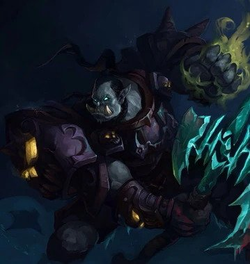

Deathbringer Saurfang
| Deathbringer Saurfang | |
|---|---|
|  | |
| Race | Mag'har Orc(Undead)" |
| Level | ?? Boss |
| Reaction | Alliance/Horde |
| Loction | Deathbringer's Rise(Icecrown Citidel) |
| Status | Deceased (lore), Killable |
{kind=link}
Deathbringer Saurfang " is the fourth boss in the Icecrown Citadel raid and the first "Pinacle Boss". He is described as being the Lich King's most powerful death knight. It's mainly a DPS race with an interesting twist (Blood Power). "
In the lore, After falling to Frostmourne at the Battle of Angrathar the Wrathgate, Dranosh Saurfang was raised in undeath by the Lich King and brought to Icecrown Citadel. Imbued with the power of the Scourge, the Deathbringer bars the way of any attackers trying to enter the Upper Spire.
-
1.
Abilities
-
1.1
10-player mode
- 1.1.1 Blood Beasts
- 1.1.2 Heroic Mode
-
1.2
25-player
- 1.2.1 Blood Beast
- 1.2.2 Heroic Mode
-
1.1
10-player mode
- 2. Reset
-
3.
Strategy
- 3.1 Blood Power
- 3.2 Tanking
- 3.3 Positioning
-
3.4
Blood Beasts
- 3.4.1 Class-specific tactics
- 3.5 Boiling Blood
- 3.6 Mark of the Fallen Champion
- 4. Heroic Mode
Abilities
10-player
-
Blood Link - Saurfang gains Blood Power from
damage he inflicts with abilities and summoned creatures. Also increases his Energy by 1 each time Blood Link triggers.
- Blood Power - Saurfang grows 1% larger and deals 1% more damage for each point of Blood Power he has.
- Blood Nova - Blood explodes outward from a random enemy target, inflicting 10,000 Physical damage to nearby enemies.
- Boiling Blood - Boils the blood of an enemy, inflicting 9,500 Physical damage every 3 seconds for 24 seconds.
- Call Blood Beast - Saurfang calls forth 2 blood beasts every 40 seconds.
- Frenzy - Saurfang goes into a frenzy, increasing his attack speed by 30%.
- Mark of the Fallen Champion - Causes Deathbringer Saurfang's melee attacks to splash to this target, inflicting 5,700 to 6,300 additional Physical damage. If the target dies while under this effect Saurfang is healed for 5% of his total health. Cannot be dispelled or removed by any means, including death.
- Rune of Blood - Saurfang leeches health when he performs melee attacks on targets marked with Rune of Blood. Leeches 5,100 to 6,900 health from an enemy target and heals Saurfang for 10 times that amount. Lasts for 20 seconds.
Blood Beasts
- Resistant Skin - The skin of this creature is highly resistant. Damage from area of effect attacks is reduced by 95% and damage from Diseases is reduced by 70%.
Heroic Mode
- Scent of Blood - Saurfang's Blood Beasts catch the scent of blood, reducing all nearby enemies movement speed by 80% and increasing their damage by 300% for 10 seconds.
25-Player
-
Blood Link - Saurfang gains Blood Power from
damage he inflicts with abilities and summoned creatures. Also increases his Energy by 1 each time Blood Link triggers.
- Blood Power - Saurfang grows 1% larger and deals 1% more damage for each point of Blood Power he has.
- Blood Nova - Blood explodes outward from a random enemy target, inflicting 10,000 Physical damage to nearby enemies.
- Boiling Blood - Boils the blood of an enemy, inflicting 9,500 Physical damage every 3 seconds for 24 seconds.
- Call Blood Beast - Saurfang calls forth 2 blood beasts every 40 seconds.
- Frenzy - Saurfang goes into a frenzy, increasing his attack speed by 30%.
- Mark of the Fallen Champion - Causes Deathbringer Saurfang's melee attacks to splash to this target, inflicting 5,700 to 6,300 additional Physical damage. If the target dies while under this effect Saurfang is healed for 5% of his total health. Cannot be dispelled or removed by any means, including death.
- Rune of Blood - Saurfang leeches health when he performs melee attacks on targets marked with Rune of Blood. Leeches 5,100 to 6,900 health from an enemy target and heals Saurfang for 10 times that amount. Lasts for 20 seconds.
Blood Beasts
- Resistant Skin - The skin of this creature is highly resistant. Damage from area of effect attacks is reduced by 95% and damage from Diseases is reduced by 70%.
Heroic Mode
- Scent of Blood - Saurfang's Blood Beasts catch the scent of blood, reducing all nearby enemies movement speed by 80% and increasing their damage by 300% for 10 seconds.
Reset
This fight can be reset by running back on the gunship while it's still there - it despawns after some time.
Strategy
Editor Mode: +
test